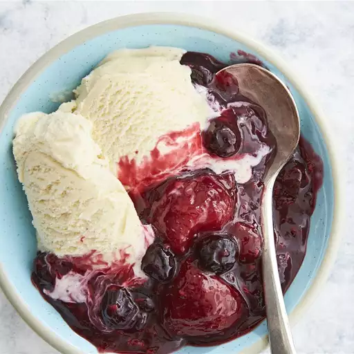

Liens de retour pages home Home
Compote de baies tiède

Description :
Cette compote de fruits rouges est préparée à la mijoteuse avec des fruits rouges surgelés et du jus d'orange. C'est un délicieux dessert nature ou sur de la glace.
Ingredients :
- 6 tasses de baies mélangées surgelées
- 1 ½ cuillère à café de zeste d'orange finement râpé
- ¼ tasse de jus d'orange
- 2 cuillères à soupe de fécule de maïs
Etape :
- Dans une mijoteuse, mélanger les fruits rouges surgelés
- le sucre, le jus et le zeste d'orange.
- Mélanger la fécule de maïs et l'eau dans une tasse jusqu'à dissolution complète. Incorporer au mélange de fruits rouges
- Couvrir et cuire jusqu'à épaississement, 5 à 10 minutes. Servir chaud ou à température ambiante.